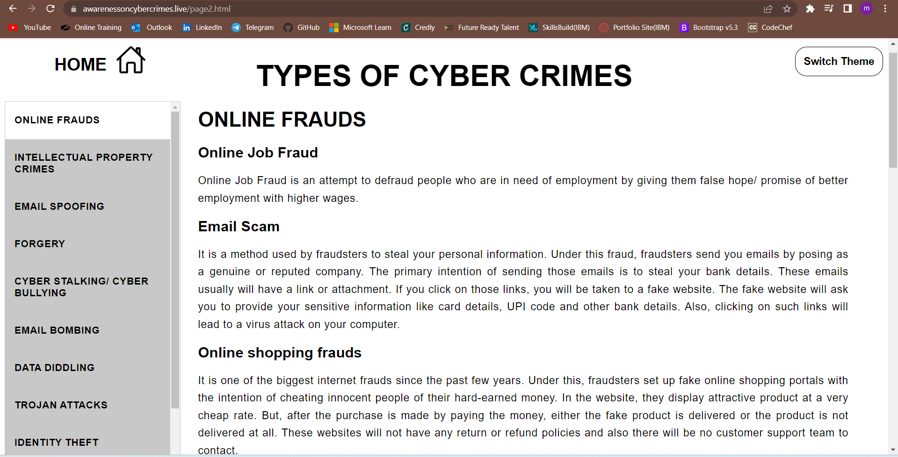

PROJECT



I previously worked on a Community Service Project. The Community Socio-economic survey was conducted
in order to
find about the rate of occurance of cyber frauds and crimes among the people. The survey resulted in the
identification
of different types of Cyber-crimes and the impact of it on their personal information.
Different cyber crimes and frauds were identified and appropriate precautions were discussed during the
survey.
In this way, the people were able to understand how to deal with such attacks and how to handle such
problems in their
day to day lives.In addition to that, we identified the situation of the cyber-crimes in the communities and
the overview
of the problems faced by the people.
This survey helped us to find out the cyber issues and we tried our level best to provide better
solutions to their problems.
Based on our concept of "AWARENESS ON CYBERCRIMES", we have designed a webpage for uploading our
research content which
would be helpful and create awareness on various cybercrimes.
The core technologies we have used to design our webpage are HTML and CSS. HTML helps us to display the
contents of the
webpage whereas CSS help us to style our webpage.